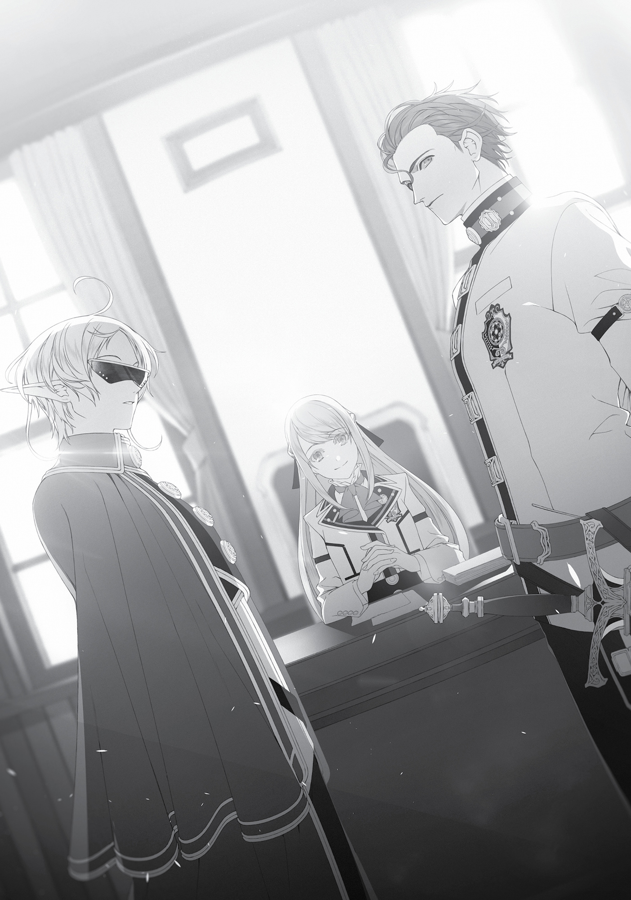

Chapter 1:
Backing
I’LL PLEDGE MY FIDELITY to Sylphie, I thought as I looked at the red stain left on the bedsheets. Sylphie had given me something precious, and now it was my turn. I would do as she wished of me. This I pledged as I used a knife to cut out the stain left on the fabric.
The problem was, Sylphie rarely voiced her feelings. I could tell she wanted to be with me, but she probably wouldn’t say it explicitly. Perhaps it had something to do with her being Princess Ariel’s bodyguard. Should I talk to the Princess about it?
Preoccupied with those thoughts, I took the scrap of cloth I’d excised from the bedsheets, put it into a small box I created with earth magic, and placed that inside my altar. Then I put my hands together in prayer.
Finally, I felt human again.
***
The day I became whole again was also the day of our once-a-month homeroom session. Walking on air, I parted ways with Sylphie, who was walking slightly bowlegged, and peeked into the classroom. Inside were Zanoba, Julie, Linia, Pursena, and finally Cliff. As usual, Nanahoshi was nowhere to be seen.
“Good morning, Master.”
“Good morning, Grandmaster.”
Zanoba and Julie greeted me as soon as they saw me. It hit me then that Julie was pretty cute. She would be seven this year—still just a child, but already cute, with her orange hair that curled outward at the ends. I patted her head. She looked at me in surprise, but immediately lowered her gaze and trembled.
It seemed she was still afraid of me. It wasn’t like I was going to eat her or anything…
“Good morning, Zanoba. Julie.”
As soon as I greeted them in return, Zanoba tilted his head with an audible, “Hm?” Then he asked, “Master, did something good happen to you?”
“What?”
So he’d noticed. Zanoba always expressed concern for me, so I wanted to share the good news as soon as possible. However, while it was fine to announce that my impotence had been cured, I’d be screwed if anyone asked me how it happened. I couldn’t reveal Sylphie’s true identity, after all.
I took a seat as I pondered the matter.
“Yo, Boss. Morning, mew.”
“Morning. Nom, nom…”
Linia and Pursena took their seats as usual, Linia popping her toned, youthful leg atop her desk, and Pursena with her uniform so tight against her curves it threatened to burst as she munched away on a dried scrap of meat. I thought about how I’d touched the bounties of their chests, slipped off their soaked underwear, and peeked at the promised land that lay beneath. Suddenly, the two of them looked cuter.
“Mew?!”
“Fuck!”
They covered their noses when I approached. Huh? That was kind of a shock. It was probably that scent they were always talking about—the scent of arousal. I was finally back in business after several long years, so the smell was probably intense.
“What should we do?” Pursena asked. “Looks like the Boss can’t control himself anymore.”
“I thought he wasn’t working down there, mew?”
“It must be my overwhelming charm. I’m such a sinful girl.”
“Th-then you be his prey, Pursena, mew! Leave our village to me, mew.”
“No, no. Maybe it’s actually you that he’s after, Linia.”
“B-but if you become Boss’ woman, you could take control of the entire world, you know, mew? You could have a daily meat buffet, mew.”
“…I-I guess I have no choice, then. I have to do it to protect you.” Pursena steeled herself after this bizarre exchange, and approached me. She batted her eyelashes adorably and hefted her breasts to make them more prominent. “Hee hee…I want you to love on me—ouch!”
I gave her a hand chop to the head. What the heck was that “hee hee”? Was she trying to make a fool of me? “Just take a seat. I’m not going to touch either one of you.”
Pursena lifted her hands protectively over her head and, with her tail tucked between her legs, took a seat beside me. It was rare for her to come within touching distance of me. Linia, on the other hand, crept to a nearby seat that was just beyond my reach. She was surprisingly guarded. This was the opposite of their usual behavior.
“Rudeus, what’s wrong? You seem different than usual.” Cliff cocked his head.
Apparently, it was true what they said about how having sex changed men. Though it wasn’t like this was my first time. “Different in what way?” I asked.
“Almost like…you’re overflowing with confidence? That’s how it seems, I guess?”
I glanced at Zanoba, who nodded in agreement. Confidence, huh? Come to think of it, the Man-God had said something about reclaiming my confidence as a man. So this was what he was referring to? I didn’t really think I felt more confident than usual, though.
“Well, everyone, thank you for everything you’ve done for me. I can’t get into the details, but my illness has finally been cured.”
My declaration drew some “oohs” from the crowd. Zanoba nodded with a look of satisfaction, and Cliff patted me on the shoulder. Linia and Pursena exchanged glances, while Julie just tilted her head in confusion.
“Well, at any rate, congrats.”
“Indeed. Congratulations, Master.”
“Congrats.”
“Congrats, mew.”
They were lined up around me and applauding, for some reason. True, it was a special occasion, but it was still kind of embarrassing. Almost like the last episode of a certain TV anime series. Maybe the order in which they’d congratulated me was the order they were going to die.
“But if Boss has been cured, that spells trouble, mew. The chastity of all female students is in peril now, mew.”
“Don’t get too close to him unless you wanna wind up pregnant.” Linia and Pursena were making obscene claims.
“How rude. I’m a gentleman.” And I wasn’t going to put my hands on anyone other than Sylphie, thank you very much.
***
Once homeroom was over, I headed to the staff room to sign up for supplementary lessons. I wanted to make up for the time I took off for our trip the other day. There was a chill in the air as I entered.
Vice Principal Jenius stopped me. “Mister Rudeus, did something happen?”
I guess it really did seem like something had changed in me. It was a bit embarrassing, to tell the truth. “A problem I’ve been preoccupied with for three years has finally been resolved. I feel relieved now, that’s all.”
“Oh really? Glad to hear.” He nodded and gave me a strained smile. “In that case, are you thinking of leaving the university?”
“Huh?” I cocked my head.
Thinking about it, he had a point. I’d enrolled here with the goal of curing my impotence. Now that that was done, it might be a good idea to head for Begaritt to reunite with my family. But…
A lot had happened this past year. I’d been reunited with Zanoba and we’d adopted Julie. I’d become friends with Linia and Pursena, and also formed a bond with Cliff. Then there was Nanahoshi, the girl from my previous world who’d been transported here. I had a feeling our meeting wasn’t coincidence. The Man-God’s real objective might even have been to bring me here so I could meet Nanahoshi, with Sylphie as just the icing on the cake.
Of course, Sylphie was what mattered most to me. As long as she stayed here, so would I. A bodyguard to the Princess was bound to encounter danger, and while I didn’t have much to offer, I wanted to protect her with all I had.
Princess Ariel was currently in her fifth year. She would likely stay until graduation, but I wondered what she had planned after that. If she meant to return to the Asura Kingdom, would it be right for me to accompany them? Now that my illness was cured, I felt like I should touch base with Paul before I went running off across the land. I’d been periodically sending him letters since enrolling here. I had no way of knowing if any had made it to him, but if even one had, and he responded, I’d miss his reply if I left the university.
So I’d wait, for now. At the very least, I’d stay in this city until I received a response from Paul.
“No,” I said to Jenius. “I’m not sure if I’ll stay all the way to graduation, but I’ll be continuing here as a student for the time being.”
“Oh really? Glad to hear,” he said with a strained smile. I couldn’t tell if that smile meant he was happy or not.
***
Even though my impotence had been cured, Nanahoshi took no notice. We didn’t converse much, so maybe she didn’t really pay attention to me.
Even when we did talk, I often felt the generational gap between us. One time, I brought up the subject of a certain junior-high-school girl who punished people in the name of the moon. I was convinced Nanahoshi would recognize the reference, but she only tilted her head at me as if to say, What the heck are you talking about? Apparently, kids these days had never heard of Sailor Moon. Nanahoshi had even been quite the avid reader of manga and light novels, apparently. I asked her if she knew the show where characters gather seven dragon balls, and she said she had heard of that one.
In our previous world, she had been seventeen and I’d been thirty-four. That made me twice her age. She’d also come to this world ten years after I did, so our cumulative ages were even further apart now.
There was nothing I could do about it. It really was just a generation gap. As for not knowing Sailor Moon, that might just be a given, considering the show’s airdates on television. Still, it took me aback. Perhaps it was this lack of common ground that led the following question to slip out my mouth.
“Miss Nanahoshi, what would you want from a person if you were to date them?”
Her hand slipped badly. She crumpled up the paper she’d been scribbling on and tossed it. “What’s this all of a sudden? Talking about love?”
“Something like that.”
“In case I haven’t made this clear, I want to get home as soon as possible. Could you take this seriously? You’re always chattering. We’d get more done if you’d shut up and move your hands instead of your mouth.”
In spite of what she said, Nanahoshi didn’t hate idle banter. In fact, she’d been perfectly open to a little chatting here and there as we worked, as long as it was kept at a reasonable level. The fact that she’d responded like that could only mean one thing.
“Does that mean you’re one of those people? Someone with no romantic experiences?”
“Tch!” She clicked her tongue harshly. “Even I have been in love before. Although we fought and that was the end.”
Come to think of it, hadn’t she been in the midst of a lovers’ quarrel when she was summoned here? I wasn’t sure whether she loved only one of her suitors, or if she was starring in her own reverse harem, but irrespective of whether she intended to apologize or continue their fight, she still had to go home.
In fact, now that I thought about it, there was a high possibility that those other two had been transported here as well. But I’d heard no rumors of people like that outside of Nanahoshi, so it was equally possible they hadn’t. Then again, the likelihood of survival after being thrown into this world all alone and mana-less would be… No, I shouldn’t say that. Perhaps Nanahoshi had already made those calculations, based on how lucky she had been to make it this far…and what would happen to someone if they weren’t so lucky.
Nanahoshi’s lips hardened into a frown as she mumbled, “It’s enough if the person you like just stays by your side.”
It sounded like she was having a tough time. I shouldn’t have asked.
***
It was lunch break, but I didn’t go to the cafeteria. I had business elsewhere today—specifically, in the student council room. If I was going to be in a relationship with Sylphie for real, I had to let Luke and the Princess know. They’d worked to get the two of us together, so in a sense, they’d already approved of our relationship. Still, I wanted to make my intent clear.
I made my way to the top floor of the main building, where there stood a somewhat fancy door chiseled with the words Student Council Room. I knocked.
“Who’s there?” It was Luke’s voice.
“Rudeus Greyrat. I have a certain matter I’d like to discuss.”
After a brief silence, I could hear the panicked clamor of footsteps. Well, I hadn’t made an appointment, after all. Maybe that was my bad.
“E-enter!”
At Luke’s slightly flustered command, I opened the door and strode in.
Princess Ariel sat atop an expensive-looking chair, her beautiful blonde hair braided behind her head. Although she was obviously gorgeous, her body was quite average for her age. She had the same amount of muscle as any other girl, with breasts that were neither large nor small. Sylphie, with her sunglasses on, stood at attention beside the Princess. She looked very dignified when she was working. And dapper, almost like a military officer. The shy crybaby was nowhere to be seen, nor was the sweet, slightly childish girl I was used to. She seemed almost cold, or perhaps cool.
It made sense. If this was the image they wanted “Fitz” to project, then it was better for Sylphie to stay silent.
“It’s a pleasure to make your acquaintance. My name is Rudeus Greyrat.” I performed the noble’s bow, took a knee before her, and lowered my head. I hadn’t learned the proper etiquette to use when greeting royalty, but this was probably adequate.
“This isn’t the royal palace. We are both just students here. Please raise your head.”
I lifted my head at her request. I didn’t want to risk embarrassing Sylphie, however, so I remained kneeling. It would be wise to remain humble in front of my partner’s boss.
“So, what brings someone as widely renowned throughout this school as you, Master Rudeus, before me today?”

I could feel my brain tingling as I listened to her voice. It was pleasant. This was what people called charisma, wasn’t it? Or perhaps she was a Blessed Child as well. I could easily believe there was a Blessed Child whose voice was like magic that mesmerized the listener.
“I’m sure Sylphie—I mean, Sylphiette—has already told you quite a bit. I came here in hopes of discussing the matter with you further.”
Princess Ariel wore a serious expression. Although she’d retreated to the university, she apparently hadn’t given up on the throne. At least, that had to be why she was taking such steps to establish connections with powerful people in her time here.
“Sylphie cured my illness,” I continued. “I heard that you assisted her, Your Highness. So if you should find yourself in need of my aid, please don’t hesitate to ask it of me.”
Ariel slowly digested those words. Then she glanced over at Luke, who nodded before saying, “I thought you were avoiding the power struggles of Asuran nobles?”
“It’s true that I have no desire to get caught in the midst of political squabbling. If someone I care about is involved, however, that changes things.” I looked toward Sylphie after I said that. Her cheeks colored. “I can’t stand around while she might be in danger.”
“Aha.” Ariel looked surprised. So did Luke. Had I said something strange?
Luke spoke. “You harbor no fondness for the Notos, the family your father ran away from? Or for the Boreas, who ordered you around?”
“I think it unfortunate that Lord Sauros was executed, but other than that, not particularly.”
Something about this conversation wasn’t right. Ah, wait! Had they assumed I hated the Boreas family? That wasn’t the case at all. They’d treated me very well, and I owed them a debt of gratitude. Well, Eris had abandoned me, but that was a different issue.
“Although…Master Luke seems to dislike me,” I added.
Luke furrowed his brows. “That’s because you’re a thickheaded idiot who doesn’t understand how girls feel.”
“I won’t argue that.” After all, I hadn’t even realized Sylphie was a girl for a whole year. I had nothing to say in my defense of my thickheadedness.
“And you’re a piece of shit who toys with girls’ feelings, Luke,” Sylphie said in a hushed whisper.
That was a surprise. And unexpectedly harsh of her to say. Or was it just that she only acted shy around me? Luke and Sylphie had been comrades for the past six years, which meant Luke had spent more time with her than I had. That might be why she felt comfortable enough around him to not mince her words.
That made me a little jealous, to tell the truth. I wondered if she’d eventually reach that level of comfort with me.
“What, so even though you don’t have a shred of sex appeal, you’re going to take the girls’ side?” Luke demanded.
“I do too have sex appeal. Rudy thanked me, after all. Right, Rudy?” she quipped back, looking to me for assistance.
I didn’t mind hopping into their comic routine long enough to say, “And that’s all, folks!” But I felt a little awkward about doing that in front of Princess Ariel. I glanced at her, suddenly realizing that she had breadcrumbs around her lips. She must’ve been in the middle of lunch when I arrived.
“Please be quiet, both of you,” the Princess said.
Sylphie and Luke went silent. I got the sense this was a familiar sort of exchange for them both.
“Rudeus Greyrat. It would comfort me greatly to know that we can count on your aid.”
“I’m glad to hear it,” I said.
“Now then.” Princess Ariel glanced over at Sylphie. Then her expression clouded over, as if she found her next question difficult to ask. “What do you plan to do?”
“‘Do’? What do you mean?”
“I apologize for being blunt, but I’ve heard about your objective in coming to this school. I was surprised to hear you were here for medical treatment, but you have now achieved your goal, have you not?”
“…I have.”
In other words, my impotence was cured. I had no doubt about that. I’d achieved my goal. Which meant my next order of business should be to reunite with Paul. That was what she was referring to, right?
“I still need to search for my missing family members,” I added. “So if your intentions are to immediately depart for the Asura Kingdom and claim political power there, I cannot be of assistance.”
“Yes, I’m aware of that. I don’t mind if you hold off on assisting me until after your family matters are settled.”
I was grateful for that, though it did mean I’d owe her in the future. With any luck, I’d at least have settled things with Paul by the time she graduated, which only left finding Zenith, whom Elinalise had assured me wasn’t in danger.
“So, what do you plan to do?”
“Pardon?” I tilted my head a little, unaware of what she was talking about. I’d just told her what I was going to do, hadn’t I? Did we somehow go back in time? Was this a new Stand user?! “What do you mean?”
“Don’t tell me that now that your impotence has been cured, you’re just going to bid Sylphie goodbye and leave to find your father?”
“Of course I wouldn’t do something like that! I’m going to be with her!” I raised my voice without meaning to at this unthinkable suggestion. There was no way in hell I’d let myself be separated from Sylphie. No way; not me!
I understood why Ariel was asking, though. Travel was so time-consuming in this world that it might take months or even years for me to meet back up with Paul, and while I might make it back before the Princess began her bid for the throne in earnest, it would be difficult to take Sylphie with me. After all, she already had her own job working full-time as Princess Ariel’s bodyguard.
“Well then, what do you plan to do?”
“…”
“You wouldn’t leave Sylphie to be damaged goods, without taking any personal responsibility, would you?”
“Of course I’ll take responsibility.” My reply was instantaneous. Partly because she’d provoked it, partly because my mind was already made up. “I’m going to marry her.”
Sylphie clapped a hand over her mouth at my blunt declaration. Luke faltered, breaking his formal posture as the shock registered on his face. Even Ariel looked utterly dumbfounded. Had I said something weird again? Maybe they thought I was moving too fast.
“You’re going to marry Sylphie?”
“Yes.”
This was fast, of course. I’d only recently realized that Master Fitz was actually Sylphie. Part of me felt like we should date for several months, get to know each other better first. Also, if we got married, I couldn’t take off at a moment’s notice even if I got an urgent letter from Paul. Still, even taking all that into account, I meant what I said.
I thought back to Eris. Sylphie might leave me, too, if I beat around the bush once more instead of being clear and honest about my feelings. I didn’t think I could take another blow like that. I was leaving nothing to chance this time.
“Marriage. A magnificent decision.” Princess Ariel nodded in satisfaction and looked at Sylphie. “Sylphiette Greyrat.”
“Wha?! Huh?! Greyrat… What?!” Sylphie became flustered.
“He said what he wants to do, but what about you?”
“Y-yes! I, Fitz—I mean I, Sylphie—will continue to serve you as I always have, Princess, and I also want to work hard as Rudy’s—I mean Rudeus’—wife!”
“Now that Rudeus has said he will take you as his wife, isn’t my protection unnecessary?”
“Princess Ariel, please don’t say that.”
“…Thank you.” After a meaningful moment of silence, Ariel pushed Sylphie gently.
Sylphie came over to me, scratching at her ear in embarrassment. How cute. It made me want to lick her ear. I’d hold back for now; we were in front of Princess Ariel, after all. “Um, uh, um, R-Rudy, um, I look forward to our future together.”
“Yeah, me too.” We awkwardly bowed at each other.
For a few minutes Sylphie fidgeted before looking back. She and the Princess locked eyes. Then the Princess suddenly spoke. “Sylphie, since you’re going to be Rudeus’ wife, you don’t need to dress like a man anymore. Return to dressing like a woman.”
I broke in. “But without Master Fitz as a disguise, she—”
“In exchange, Rudeus, I will make use of your name. There isn’t a person around these parts who hasn’t heard of you, and many may jump to their own conclusions once they learn I’ve handed you my right-hand woman.”
She probably meant that since Sylphie and I would be together, people might think I was linked to the Princess. So instead of making use of my magical powers, she would make use of my reputation. The end result was about the same, but the way she framed it was entertaining.
“I would be fine with serving you in an official capacity, as well.” I did have to reunite with Paul at some point, but that was a separate matter. I was fine with her making a definitive declaration about my loyalties—if not as a sympathizer to her cause, but rather someone connected to her through Sylphie.
“Unnecessary. Your power is far too great for my hands to contain.”
Not sure I’m that strong, I thought doubtfully. Still, it’d be a pain to have to follow her around and run her errands. I decided to take her word for it.
“And of course, if anything should happen to you, you’re free to drop my name as need be. Despite my current circumstances, the name of the Second Princess of the Asura Kingdom may prove useful to you.”
“I appreciate that.” It never hurt to have more friends in high places. Not that I was getting all this for free. I had little doubt she would hesitate to call upon my aid when she was ready to make her move, but decided not to dwell on that part for now.
Sylphie took off her sunglasses, bowed her head and said, “Princess Ariel, Luke…thank you for everything you’ve done for me.”
I followed her example and bowed as well.
And so, I became a part of Ariel’s inner circle—and engaged to Sylphie.